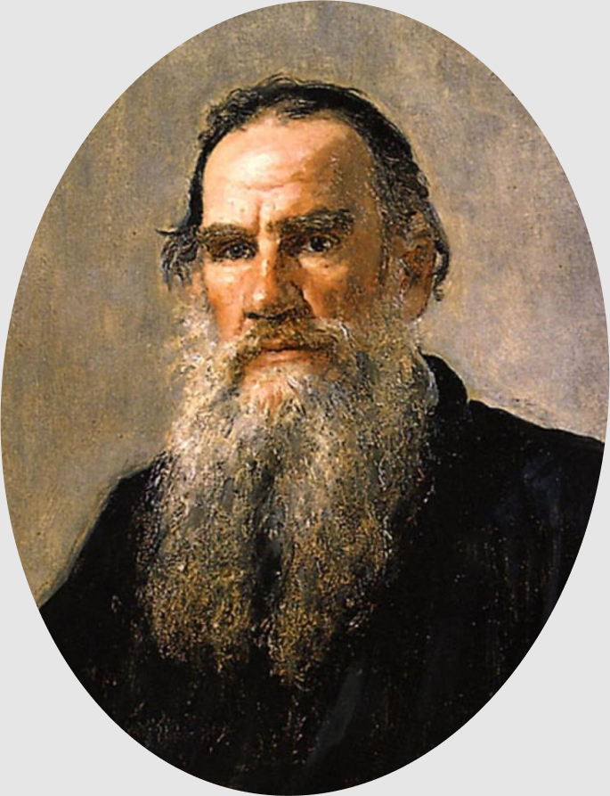
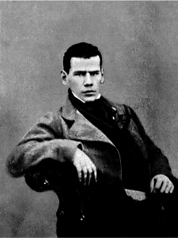
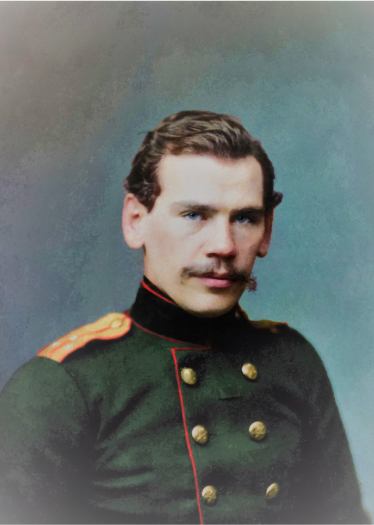
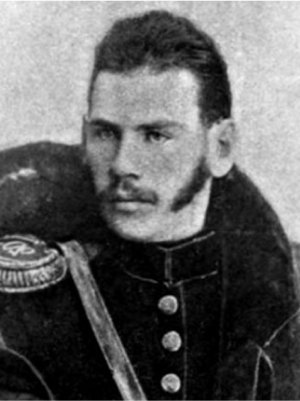
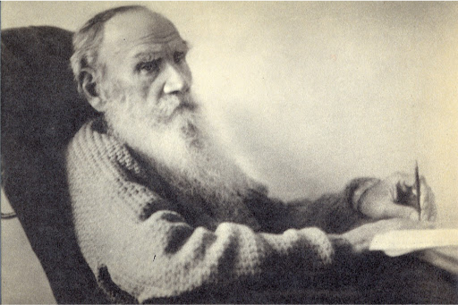

1828–1910
Толстой
Лев Николаевич
Всемирноизвестный русский
писатель и мыслитель
Просветитель, публицист,
религиозный мыслитель

Биография
- 1828
- Лев Толстой родился 28 августа (9 сентября) 1828 года в именитой дворянской семье в родовой усадьбе матери Ясная Поляна Тульской губернии.
- Он был четвёртым ребёнком в семье. Но в уже в детстве будущий великий писатель осиротел.



Обучение
- 1843
- В 1843 году повзрослевший Лев Николаевич поступает учиться в престижный Императорский Казанский университет. После успешных вступительных экзаменов он обучение и экзамены формальностью и провалил итоговую аттестацию за первый курс..
- Но обучение не прервал — поселившись в доставшейся ему по наследству усадьбе Ясная Поляна, он занялся самообучением. Каждый день он ставил перед собой задачи и пытался их выполнять.
- 1849
- Кроме того, в распорядок дня Толстого входили работа с крестьянами и налаживание быта в поместье. В 1849 году открыл школу для крестьянских детей.
- Но самовоспитание молодого Толстого не задалось. Решить эту проблему он собирался в Москве, готовясь к кандидатским экзаменам, но вместо них увлёкся светской жизнью.

«Я написал вдруг много правил и хотел им всем следовать; но силы мои были слишком слабы для этого.
Теперь же я хочу дать себе одно только правило и прибавить к нему другое тогда только, когда я уже привыкну следовать одному.
Первое правило, которое я назначаю, есть следующее: исполняй все то, что ты определил быть исполнену.»
Из дневника Льва Толстого